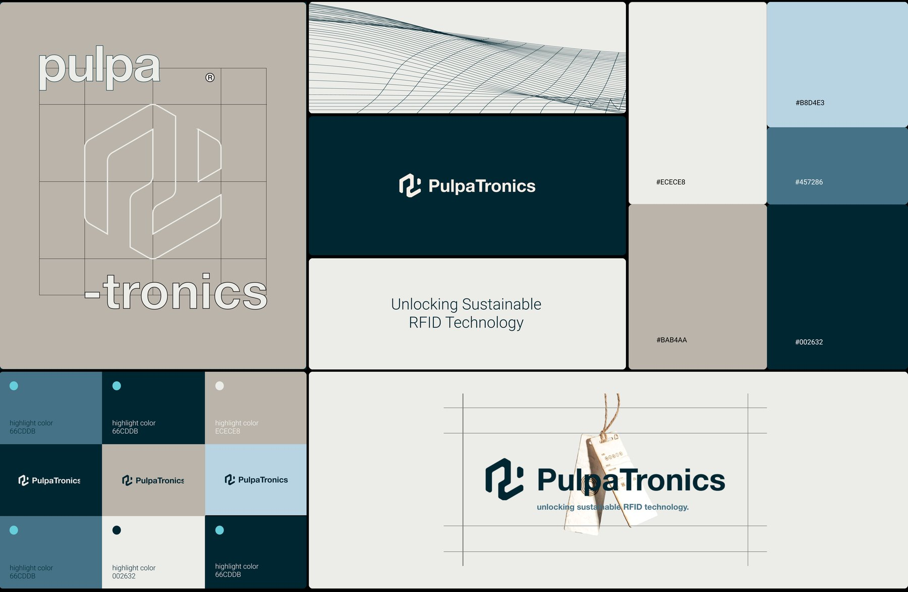

A startup selling an unproven material into an industry that buys on reliability. The old palette was earthy and quiet, so it read as a company that had always been there, which is the opposite of the claim the product makes.
The only designer in a team of eight. I rebuilt the colour system, then produced everything that had to live inside it: promotional material and the visual support for their workshops.
A visual system the team could keep using without me, and a brand that reads as new and dependable at the same time.

Project overview
PulpaTronics makes RFID tags out of paper. No metal antenna, no chip, no laminate, which is the whole point: over 18 billion RFID tags are manufactured for single use every year, and a million items carrying a PulpaTronics tag instead saves around 2,400kg of CO2 a year. It's a B2B sustainability play, and it was pitching to retail brands that judge a supplier partly on whether it looks like it will still exist in three years.
I joined as a design intern in London in 2024, into a team of eight, as the only designer in the company. The brief was brand building, which at that size meant whatever the brand needed that week, decided by me.
My contributions
Three strands, and each one grew out of the one before it.
- Rebuilding the product's visual system, starting with colour. I audited the existing palette, found what was making it read as tired, and remapped every token in the system to a replacement. That set the constraints everything after it was made inside.
- Design material support. Once the system existed, I produced against it: marketing collateral, business cards, an illustration set for a joint campaign, and visual support for customer workshops.
- UI/UX design, for PulpaTronics and for the ventures it worked alongside. Interface and experience work for the company's own product surfaces and for the partner startups it ran joint work with, including the website design standards. This is the strand I can show least of, because almost all of it sits under NDA. It was also a substantial share of what I actually made there.
Rebuilding the visual system
The old palette was three colours: a deep Business Blue, a Paper White, and a Peace Blue turquoise that existed in the spec but was barely used anywhere. In practice the brand ran on desaturated earthy tones, dark blues, browns and greys, with beige and off-white doing most of the work. It read as faded paper. Appropriate for a paper product, less appropriate for a technology company asking retailers to bet on it.

What the brand actually had to do
The positioning was the real constraint. PulpaTronics is a B2B startup selling an unproven material into an industry that buys on reliability, and there are two ways to get that wrong. Look too much like a startup and you lose the reliability. Look like an established supplier and you lose the only reason anyone should pick you over the incumbent.
The old palette had drifted hard into the second. Earthy, low-contrast, quiet: it read as a company that had always been there and intended to keep doing the same thing, which is the exact opposite of the claim the product makes. What it needed to read as was early and inevitable. A company on a trajectory, not one holding a position. Practically that meant keeping the deep navy, because trust is what a supplier sells, and finally spending the turquoise, because nothing in the system was saying that anything was happening.
What I changed
- Put the highlight colour to work. The turquoise was already in the brand book. I gave it a job: a small, deliberate accent that gives every layout a focal point.
- Redefined the neutrals. Cleaner beige and off-white, so the paper reference reads as intentional rather than worn.
- Balanced reliable against innovative. The deep navy stays, because trustworthiness is what a B2B supplier is selling. Brighter mid-tones carry the rest.
- Aligned the palette with the mission. A blue-green range reinforces the environmental argument without anyone having to say the word "eco".
The mapping is where the work actually is. A muddy warm black came out of the system entirely. The navy was cleaned and deepened. The mid blue lifted substantially, from a near-grey rgba(40,54,65) to rgba(69,114,134). A neutral grey became an actual light blue. Pure white softened to paper white, so nothing on the page glares.

It reads better in motion than in a table, so here it is as one: